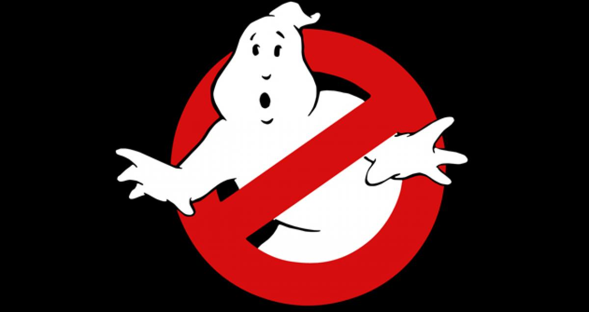

-
Inicio
-
Conocenos
-
Contactanos
-
Casos Resueltos
-
Agradecimientos
Servicio de Cazafantasmas

Somos el inigualable equipo de Scooby-Doo y nos complace presentarles nuestro nuevo y
emocionante servicio: ¡Los Cazafantasmas de Scooby-Doo! ¿Estás experimentando extraños sucesos paranormales en tu
ciudad? ¿Te persiguen espectros, fantasmas y criaturas sobrenaturales? ¡No te preocupes más! Nuestro equipo está
aquí para resolver esos misterios espeluznantes y salvar el día.¿Qué nos hace diferentes de otros equipos de
cazafantasmas? Nuestra fórmula ganadora radica en nuestra dinámica como grupo. Pero eso no es todo. Nuestro furgón
de alta tecnología, la Máquina del Misterio, está equipado con todo lo necesario para investigar y perseguir
espíritus malignos. Desde rastreadores de fantasmas hasta trampas especializadas, tenemos todas las herramientas
necesarias para resolver los casos más escalofriantes.

Coordinación
Nos adaptamos a tus tiempos y para cuando lo necesites. Sabemos que es algo que querés solucionar rápido, y rápido
vamos a estar.

Te protegemos
Usamos productos que no son tóxicos. Los operarios están asegurados, certificados y te brindamos todos los datos
necesarios para tu tranquilidad.

Garantizamos calidad
Trabajamos con productos de los mejores laboratorios, director técnico e ingeniero agrónomo. También estamos
habilitados a emitir certificados para toda la provincia.